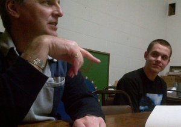

A group of Ventures is called a company. This is because the company has regular meetings, as well as an executive. This executive always consists of 4 positions; the president, the vice-president, the treasurer, and the secretary. Members of the company are elected into these positions by their peers. Some groups may create extra positions, depending on what the group does and how many people are in the group. I will now go over the responsibilities of the four main positions, as stated in my company’s by-laws:
President
- Be responsible for the preparation of the overall program and the agenda for meetings;
- Preside over the Company and Executive Council meetings and shall, in due course, ensure that parliamentary procedures are followed as closely as possible;
- If not willing to accept the role of the Group Youth Commissioner, this position will be elected by the company for approval by the Group Commissioner.
 - Be responsible for the Company’s correspondence
- Assist the President and be prepared to assume his duties if required;
- Be responsible for the recruiting and briefing of all new and prospective members of the Company
- Under the supervision of the Advisor, collect, bank and control the distribution of Company funds, keeping an accurate record of all financial matters; and,
- Present a financial statement to the Company at the monthly meeting.
- Monitor all Company fundraising events through the appointed fundraising event coordinator;
- Assist fundraising event coordinators in the planning and execution of fundraising events; and,
- Assist the Group Fundraiser with fundraising activities involving the Company.
- The Treasurer must provide an annual financial report around the end of scouting year; no later than a week before the last group committee meeting.
- Maintain a register of all current members of the Company and their level of achievement in the Venturer Program;
- Advise absent members of the proceedings and decisions made at Company Meetings;
- In conjunction with the President, prepare an Agenda for each Company Business Meeting;
- Maintain a permanent record of each Company Business Meeting and be prepared to present minutes at subsequent meetings; and,
- Maintain the company Log of activities.